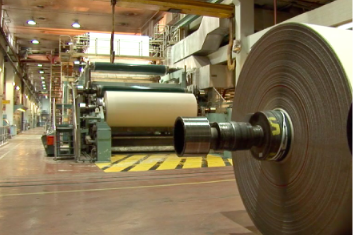

熱噴塗技術應用
熱噴塗技術製程應用範圍廣，包含鋼鐵、印刷、航太、光電、防蝕、石化等工業產業。熱噴塗又稱為熱熔射或噴焊，為表面處理技術的一種，其原理是藉由熱能將材料（粉末或線材）加熱，呈現熔融或半熔態後，再以高壓、高速氣體霧化沉積在基材上，層狀堆疊後形成塗層，目前常見的熱噴塗技術包含電漿噴塗、電弧噴塗、高壓高速火焰噴塗、火焰噴塗及冷氣動力噴塗。
-

鋼鐵冶鍊
鋼鐵產業對於工件而言，是最為嚴苛的工作場所，長時間的受到高溫沖蝕及融損、高磨損等，藉由使用熱噴塗在工件表面形成保護塗層可大幅提高工件的使用壽命，也可以在塗層失效後重新被覆新的塗層來保護工件，進而減少購置新工件之成本。在塗層的選擇上大部分是以NiCr基合金、CoCr基合金、碳化鎢系、陶瓷和瓷金材料為主，這些材料分別有抗高溫、耐磨、抗熱腐蝕與抗熱沖蝕的效果。在製成選擇上則以電漿噴塗與高壓高速火焰噴塗為主。
-

印刷造紙
造紙業的設備長時間都是在高速運轉與高磨耗的環境下運行，相對於工件表面會需要有高硬度的塗層，最常見的例子為瓦楞輥表面使用高壓高速火焰噴塗碳化鎢塗層，此製程可以有效提升瓦楞輥的壽命，也可以取代傳統的鍍硬鉻，減少對環境的污染。而另外一個印刷業會用到的為印刷輪，工件表面同樣會噴塗高硬度塗層，但印刷輥輪表面會需要進行鐳射雕刻紋路，所以表面緻密性要求相當高，以目前常見的塗層會採用氧化鉻並搭配電漿噴塗。而這近年對塗層要求相對提高，在歐美等先進國家會採用漿料電漿噴塗來得到更好的塗層緻密性與硬度。
-
航太能源
航太產業中常見的塗層有抗高溫的熱障塗層、可磨耗塗層、耐高溫金屬塗層（T400、T800）、耐磨耗塗層等。其中熱障塗層主要由兩個塗層組合而成，分別為鍵結層（Bond Coating）和頂層（Top Coating），而這兩種塗層所使用的熱噴塗工藝也不相同。以鍵結層而言，目前常見的工藝有低壓電漿噴塗（LPPS）、高壓高速火焰（HVOF、HVAF）。在鍵結層中所使用的材料為MCrAlY（M= Ni, Co, NiCo, CoNi），與頂層材料有良好的親和性。在頂層的工藝中目前主流為使用大氣電漿噴塗（APS），近幾年有相當多的國內外科研單位與製造商使用大氣漿料電漿噴塗（ASPS）來進行頂層的製作。頂層所使用的材料為氧化釔安定氧化鋯（8YSZ），該材料的特色為低熱傳導係數且相較於其他的絕熱材料價格相對便宜。這些塗層應用在各級的動葉、靜葉、動葉環、燃燒桶、密封環、飛機起落架等各式應用。
-

光電半導體
光電半導體的應用主要為設備清洗，而熱噴塗在該領域有兩種工藝制程，分別為電漿噴塗與電弧噴塗其應用也不太相同，以電漿噴塗而言，所噴塗的材料為氧化鋁和氧化釔塗層，主要用來抵抗等離子的轟擊造成腔體的損壞。另外一種電弧式噴塗的工藝則是噴塗純鋁線，使腔體內部表面具有高粗糙度，經過尖端放電的效果來捕捉腔體內部的帶電粒子，防止這些粒子影響良率。
-

大氣防蝕
在業界，防蝕主要有幾種製程可以使用，分別為熱噴塗鋅鋁塗層、熱浸鍍鋅以及油漆，以上三種制程各有其優缺點。熱噴塗鋅鋁塗層其優勢在於，可進行大面積噴塗、工件沒有大小的限制，也可以進行現場施工，塗層防護時間為三者中最久的。常見防蝕技術應用如橋樑防蝕工程、離岸風力發電機防蝕工程等。
-

石化油氣
石化產業工件幾乎都是在極端壓力下磨損、腐蝕、化學侵蝕和磨損。該領域最常使用的塗層為碳化鎢、鎳基超合金和鈷基超合金塗層，並搭配高壓高速火焰噴塗，可以有效提升工件壽命。最典型的應用為球閥、閥體、閘板、螺桿、深抽油管。